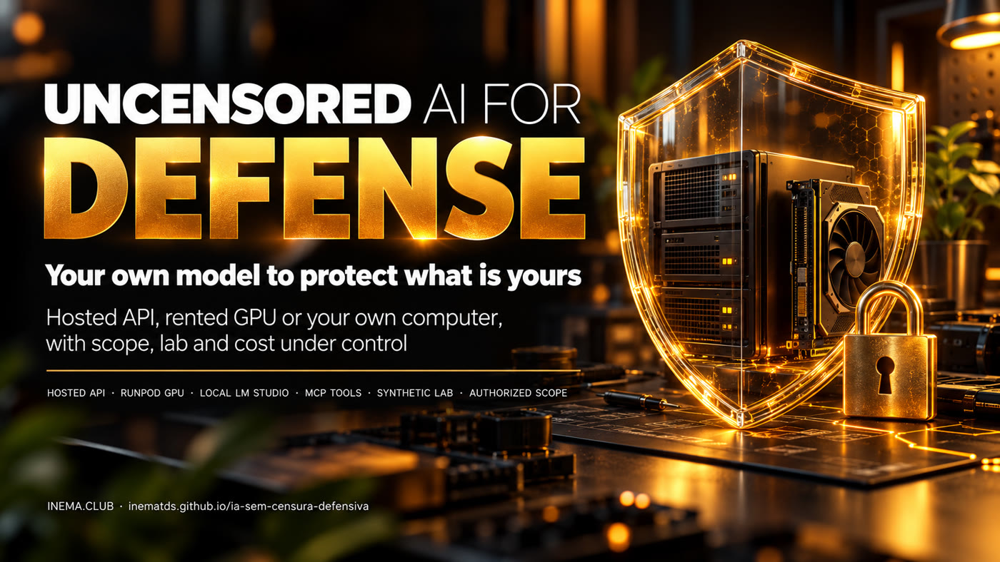

Your own model, without a lecture, to examine what belongs to you — with a written scope, a fake lab, and the GPU shut down when you’re not using it.

This is a free INEMA kit in Portuguese for people learning security who want an open AI model that won’t refuse technical questions. These are called abliterated models: the refusal behavior has been removed. The kit shows how to connect one to DeepSeek Harness (an open-source agent) through an API, a rented RunPod GPU, or LM Studio on your computer. It includes ready-to-use prompts, scripts that check whether text, tools, and images work, a fake lab for practice, and a watchdog that stops an idle GPU. You need an assistant that can read files, Python 3.10+, and, depending on the route, an API or GPU account — plus permission for everything you test.
Removing a model’s refusal behavior doesn’t remove your responsibility. That responsibility shifts to the scope, the lab, and the permissions you grant. The kit provides all three.
Hosted API, RunPod GPU, or LM Studio locally. For each route, the same checker verifies text over two turns, a harmless function, and image reading — each separately.
A fake page at 127.0.0.1 with two configuration issues. The check runs only with a valid scope file, makes one request, and rejects any remote host.
A local watchdog tracks idle time and, when you tell it to, stops your Pod after checking its ID and name — starting with a simulation and confirming EXITED.
The order is always the same: scope and lab first, one capability at a time, costs under control.
Fewer steps, no GPU. You pay for API usage (a chat subscription doesn’t include it). Provider examples: Abliteration and OrcaRouter.
You choose the model and runtime. You pay for GPU time and storage. Example: Huihui Qwen3.5 9B abliterated Q6_K with a vision projector.
No GPU account needed if your computer can handle it. Example: Huihui Qwen3.6 35B-A3B abliterated Q4_K (~21,7 GB + ~0,9 GB for the projector).
Models and prices checked on Oct 26, 2026. They change: check before downloading or renting.
An open model whose tendency to refuse requests has been technically removed.
An open-source agent that talks to the model and gives it tools in a working folder.
A standard for connecting tools to an AI agent. Here: a browser (Playwright) and search (Firecrawl).
GGUF is the model file format; Q4_K and Q6_K are compression levels (quantization): a lower number means a smaller file and slightly lower quality.
An extra file (mmproj) that lets the model read images. It needs to match the model and runtime.
The program that runs the model and serves its API (for example, the LM Studio server).
A Pod is a machine with a GPU rented from RunPod. EXITED is the stopped status: only then can you be sure the GPU has stopped accruing hourly charges.
A command-line scanner that runs “templates.” The kit includes a passive one for the lab only.
The model’s API address, ending in /v1.
The kit scripts use only Python’s standard library. The rest depends on the route.
To download the kit and run the scripts and tests.
git clone https://github.com/inematds/ia-sem-censura-defensiva cd ia-sem-censura-defensiva python3 kit/scripts/doutor.py
Claude Code, Codex, or a similar tool. It follows the prompts and shows you what it will do first. Node.js at the version required by Harness.
API: provider account and credit. RunPod: account and credit. Local: available memory and disk space. Chat subscriptions include neither API access nor GPU time.
Steps 1 to 4 work today without any account. From step 5 onward, follow the prompts for your route.
The doctor checks versions and ports only; it doesn’t install anything or open any keys.
git clone https://github.com/inematds/ia-sem-censura-defensiva && cd ia-sem-censura-defensiva python3 kit/scripts/doutor.py
25 tests on 127.0.0.1 with fake servers: denied scope, rejected remote target, expired scope, finding and fix, proxy without a token, idle timer, and stop failure.
python3 -m unittest discover -s kit/testes -v # Ran 25 tests ... OK
Use two terminals. The check creates a 10-minute scope for your lab only, makes one request, and lists the findings.
# terminal 1 python3 kit/scripts/laboratorio.py # terminal 2 python3 kit/scripts/checagem_segura.py --lab-local-autorizado # "findings": X-Content-Type-Options and Referrer-Policy are missing
Stop the lab (Ctrl+C), start the fixed version, and repeat the same check. Use the report template (in Portuguese) to separate evidence, hypotheses, and fixes.
python3 kit/scripts/laboratorio.py --corrigido python3 kit/scripts/checagem_segura.py --lab-local-autorizado # "findings": []
Open CONFIGURA-COM-ASSISTENTE.md (in Portuguese), copy the request, and paste it into Claude Code (or a similar tool) opened in the kit folder. It asks which route you want, how much free memory you have, and your budget.
Follow the numbered prompts (in Portuguese): the assistant installs anything missing (Harness, LM Studio, Nuclei) and shows you first. For the local route, once LM Studio is installed (the lms command comes with it), the server is bound to 127.0.0.1:
lms load SEU-MODELO --context-length 4096 --identifier defensivo-local --ttl 600 lms server start --bind 127.0.0.1 --port 1234
If there’s a key, it comes from a private file, never from chat. Each capability produces a separate result.
# local route: no key python3 kit/scripts/checa_endpoint.py --base-url http://127.0.0.1:1234/v1 \ --modelo defensivo-local --funcao --imagem kit/exemplos/teste-visao.png
# API or cloud: put the key on a single line in a private file mkdir -p ~/.segredos && chmod 700 ~/.segredos nano ~/.segredos/chave-modelo && chmod 600 ~/.segredos/chave-modelo export INEMA_CHAVE_MODELO_ARQ=~/.segredos/chave-modelo python3 kit/scripts/checa_endpoint.py --base-url https://SEU-PROVEDOR/v1 --modelo SEU-ID --funcao
Browser (Playwright MCP), search (Firecrawl MCP), and Nuclei, each verified with a real call — run Nuclei (a command-line scanner installed by prompt 03) only against the lab, using the kit’s passive template.
nuclei -u http://127.0.0.1:8181/ -t kit/exemplos/nuclei-cabecalhos-lab.yaml -rl 1 -c 1
Every request passes through the watchdog at 127.0.0.1:8282, using a local token. Only after you see simulacao_pararia should you enable the actual stop, with the Pod’s exact ID and name. Check for EXITED in the dashboard.
# create a random local token (this is what Harness uses, not the RunPod key) mkdir -p ~/.segredos && chmod 700 ~/.segredos python3 -c "import secrets;print(secrets.token_urlsafe(32))" > ~/.segredos/token-guarda chmod 600 ~/.segredos/token-guarda export INEMA_TOKEN_LOCAL_ARQ=~/.segredos/token-guarda python3 kit/scripts/guarda_ociosa.py --upstream https://SEU-ENDPOINT/v1 --ocioso 900
Fill out a copy of escopo-autorizado.exemplo.json (in Portuguese) outside the repository and use prompt 09: a non-destructive plan, minimal evidence, a fix, and a retest.
They’re included at the end of every prompt and in USO-DEFENSIVO.md (in Portuguese). They’re mandatory.
Systems you own or have the owner’s written permission to test. A public URL, working login, or API key isn’t permission.
Exact target, documented permission, actions, time window, and limits. If anything is missing, expired, or unclear: stop.
Invented data on 127.0.0.1. Start with checks that don’t change anything.
Use the least evidence needed to confirm a finding. Don’t download databases, expose real credentials, or access someone else’s account.
Use a private file with chmod 600, referenced by an environment variable. Use test keys and revoke them when you’re done.
Run a downloaded model without tools first. Isolation comes from the operating system and container, not the prompt text.
An Endpoint on your computer isn’t exposed to the network. A cloud Endpoint always needs authentication — verify that requests without a key are rejected.
Stopping the app doesn’t stop the GPU. Storage charges continue while the Pod is stopped.
An AI finding is a hypothesis until it’s safely reproduced. A clean scan doesn’t prove that something is secure.
Security research on backdoored abliterated models: ProjectDiscovery — How abliterated models can get you pwned (in English).
The three routes, the lab, and cost controls, in just a few minutes.
A test with clear limits, not a certification. Details in kit/verificacao/STATUS.md (in Portuguese).